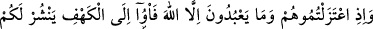
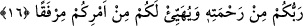

Allah’tan başkasını tanrı edinenlerin delillerini inkâr, onları âciz bırakma ve susturmaya
yöneliktir. Çünkü putlara tapınmaya dâir sağlam deliller bulmak imkansızdır.
“Öyle ise” O’na ortak nisbet ederek “Allah hakkında yalan uydurandan daha zâlimi
var mı?” Oysa Allah bu kabil yakıştırmalardan münezzehtir, çok yücedir. Bunun anlamı,
Allah’a bu tür yakıştırmada bulunanlar zâlimlerin hepsinden daha zâlimdir. Allah’ın
buna cür’et edenlere azâbı da, azabların en şiddetlisidir. Çünkü zulüm, azâbı gerektirir
ve azâbın en şiddetlisi de en zâlim olanadır.
16. (İçlerinden biri şöyle demişti:) “Mâdem ki siz onlardan ve onların Allah’ın
dışında tapmakta oldukları varlıklardan uzaklaştınız, o halde mağaraya sığının ki,
Rabbiniz size rahmetini yaysın ve işinizde sizin için fayda ve kolaylık sağlasın.”
İçlerinden biri şöyle demişti: “Mâdem ki siz onlardan ve onların Allah’ın dışında
tapmakta oldukları varlıklardan uzaklaştınız,” Yâni siz onlardan îtikadda ayrıldınız
cismen de ayrılmak istediniz. Bu ifâde, Ashâb-ı Kehf’in dinleri uğrunda kaçmaya kesin
olarak karar verdikleri zaman bazılarının diğerlerine hitâbıdır.
Kâşifî der ki: “Daha önce geçti ki Dakyanus bunlar ile muârazadan sonra mühlet
verdi. Onlar da kaçtılar. Onların büyüğü olan Yemliha yolda onlara: “Mâdem ki siz
onlardan ve onların Allah’ın dışında tapmakta oldukları varlıklardan uzaklaştınız…”
dedi. Yâni mâdem ki şirk ehlinden bertaraf oldunuz ve onlardan uzaklaşmak istediniz,
demektir”
Âyetin anlamı şöyledir: “Mâdem ki siz onlardan ve Allah’ın dışındaki mâbûdlarından,
yâni Allah’a ibâdet dışında onların mâbûdlarına ibâdetten ayrılıp uzaklaştınız.”
“O halde mağaraya sığının” yâni mâdem ki onlardan îtikâden ayrıldınız, o halde
cismen de onlardan ayrılın. Ya da eğer onlardan ayrılmak istiyorsanız, bunu mağaraya
sığınarak yapın.
Burada îtikâdî ayrılığın cismânî ayrılığı da gerekli kılacağına işaret vardır. Bu
sebeple Mecmau’l-fetâvâ’da şöyle der: Rustuğfenî’ye Ehl-i sünnet ile Mûtezile
arasında evliliğin caiz olup olmadığı sorulduğunda o “Hayır, câiz olmaz.” diye cevap
verdi.
“Ki Rabbiniz” işinizin mâliki “size rahmetini” iki cihanda fazlını, nimetlerini
“yaysın” bollaştırsın, genişletsin “ve işinizde” sadedinde olduğunuz din uğrunda kaçma
işinde “sizin için fayda ve kolaylık sağlasın” ki ondan faydalanasınız. Onların böyle
bir şeye kesin karar vermeleri, îmanlarının şüphe şâibesinden uzak ve bağlılıklarının
kuvvetli olduğu içindir. Bir hadiste şöyle buyrulmuştur: “Kabûl edileceğine kesin
inanarak Allah’a duâ edin.”[162]
Âyette işaret vardır ki sıdk ile tevbe eden ve gerçek tâlib olan kimse, kavminden